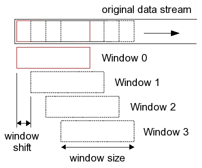
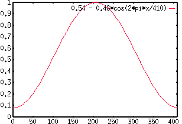

public class RaisedCosineWindower extends BaseDataProcessor
The number of
resulting windows depends on the window size and the window
shift (commonly known as frame shift in speech world). Figure 1 shows the relationship between the original data
stream, the window size, the window shift, and the windows returned.

Figure 1: Relationship between original data, window size, window shift, and the windows returned.
The
raised cosine windowing function will be applied to each such window. Since the getData() method returns a
window, and multiple windows are created for each Data object, this is a 1-to-many processor. Also note that the
returned windows should have the same number of data points as the windowing function.
The applied windowing function, W(n), of length N (the window size), is given by the following formula:
W(n) = (1-a) - (a * cos((2 * Math.PI * n)/(N - 1)))where a is commonly known as the "alpha" value. This variable can be set by the user using the property defined by
PROP_ALPHA. Please follow the links to the see the constant field values. Some values of alpha
receive special names, since they are used so often. A value of 0.46 for the alpha results in a window named Hamming
window. A value of 0.5 results in the Hanning window. And a value of 0 results in the Rectangular window. The default
for this system is the Hamming window, with alpha 0.46 !). Figure 2 below shows the Hamming window function (a =
0.46), using our default window size of 25.625 ms and assuming a sample rate of 16kHz, thus yielding 410 samples per
window. 
Figure 2: The Hamming window function.
Data| Modifier and Type | Field and Description |
|---|---|
static String |
PROP_ALPHA
The property for the alpha value of the Window, which is the value for the RaisedCosineWindow.
|
static String |
PROP_WINDOW_SHIFT_MS
The property for window shift in milliseconds, which has a default value of 10F.
|
static String |
PROP_WINDOW_SIZE_MS
The property for window size in milliseconds.
|
static String |
WINDOW_SHIFT_SAMPLES |
static String |
WINDOW_SIZE_SAMPLES |
logger| Constructor and Description |
|---|
RaisedCosineWindower() |
RaisedCosineWindower(double alpha,
float windowSizeInMs,
float windowShiftInMs) |
| Modifier and Type | Method and Description |
|---|---|
Data |
getData()
Returns the next Data object, which is usually a window of the input Data, with the windowing function applied to
it.
|
int |
getSampleRate() |
float |
getWindowShiftInMs()
Returns the shift size used to window the incoming speech signal.
|
void |
initialize()
Initializes this DataProcessor.
|
void |
newProperties(PropertySheet ps)
This method is called when this configurable component needs to be reconfigured.
|
long |
roundToFrames(long samples)
Rounds a given sample-number to the number of samples will be processed by this instance including the padding
samples at the end..
|
getPredecessor, getTimer, setPredecessorgetName, initLogger, toString@S4Double(defaultValue=25.625) public static final String PROP_WINDOW_SIZE_MS
@S4Double(defaultValue=10.0) public static final String PROP_WINDOW_SHIFT_MS
@S4Double(defaultValue=0.46) public static final String PROP_ALPHA
public static final String WINDOW_SHIFT_SAMPLES
public static final String WINDOW_SIZE_SAMPLES
public RaisedCosineWindower(double alpha,
float windowSizeInMs,
float windowShiftInMs)
public RaisedCosineWindower()
public void newProperties(PropertySheet ps) throws PropertyException
ConfigurablenewProperties in interface ConfigurablenewProperties in class ConfigurableAdapterps - a property sheet holding the new dataPropertyException - if there is a problem with the properties.public void initialize()
BaseDataProcessorinitialize in interface DataProcessorinitialize in class BaseDataProcessorpublic Data getData() throws DataProcessingException
getData in interface DataProcessorgetData in class BaseDataProcessorDataProcessingException - if a data processing error occurredDatapublic float getWindowShiftInMs()
public int getSampleRate()
public long roundToFrames(long samples)
samples - Copyright © 2014. All rights reserved.